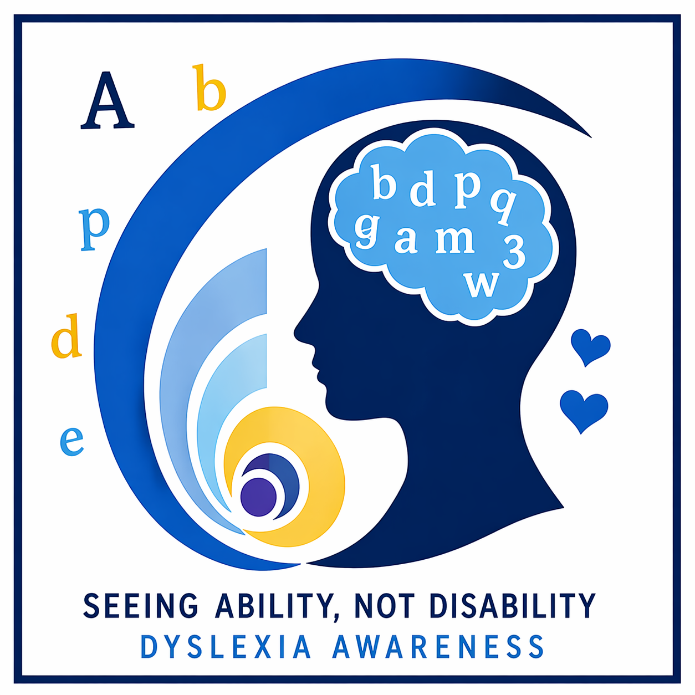

Dyslexia Awareness Campaign

Dyslexia is an invisible learning difference that affects reading, writing, and spelling. Our goal is to raise awareness and support those affected.
Samar Mohamed, Hana Haitham, Hend Hassan, Youssef Mahmoud, Jana Nour, Nour Mohamed, Ahmed Mahmoud
Dyslexia is one of the most misunderstood invisible learning differences. Many people believe false ideas about it, which can harm those affected. Our goal is to raise awareness, correct misconceptions, and encourage support.
First, dyslexia is often misunderstood as laziness or low intelligence, which is not true. People with dyslexia are just as intelligent but learn differently.
Second, people with dyslexia face real struggles every day, such as difficulty reading and writing. These challenges affect their confidence.
Third, awareness helps schools provide support like extra time and tools.
Some people believe students should not get extra help. However, this is unfair because support creates equal opportunities.
In conclusion, we must spread awareness, be kind, and support people with dyslexia.
Dyslexia is an invisible learning disorder that affects reading, writing, and spelling but not intelligence.
People think dyslexia means laziness or low intelligence. This is false.
Students may feel embarrassed, take longer, and lose confidence.
15% worldwide, 11% in Egypt.
Watch our video to understand dyslexia and how to support others.